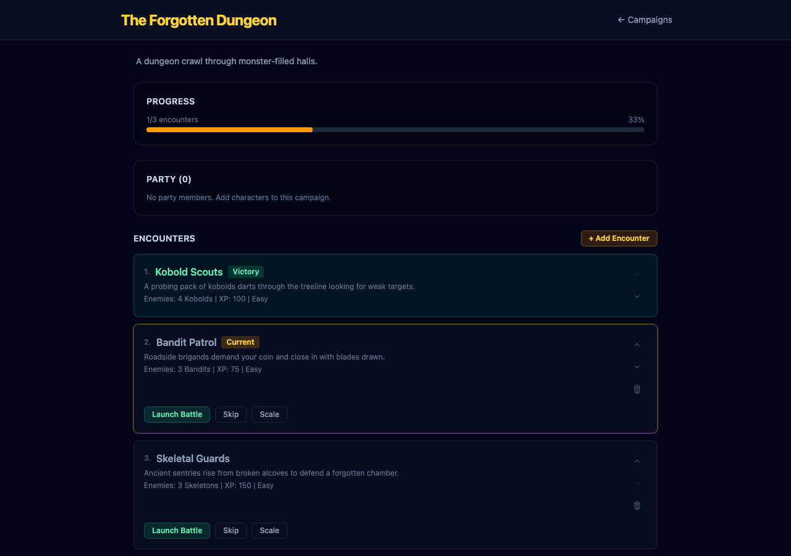

Fixes overlapping reorder arrows and trash icon on campaign detail encounter cards.
All three controls [↑][↓][🗑] are grouped in a single flex-col at the top-right. Each button is min-h-[32px] min-w-[32px]. No overlap. Clean, accessible layout.

src/components/campaign/EncounterListEditor.tsx — Removed absolute trash button; merged into the reorder control group.